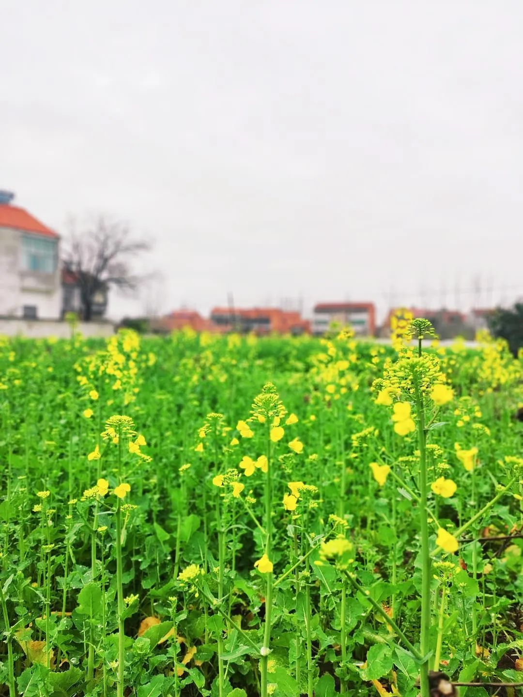

他们还在，我也在
原文链接 备份链接 收到了朋友们寄来的口罩，一份从日本寄来的，一份从北京，还有一份从天津。给我寄口罩的几个朋友，有些只是网上相识，却并未见过面；有些是现实中见过几次面的，也没有到特别熟的程度。 但他们都纷纷发微信问我是否需要口罩，他们那边 …

吃完饭后，父亲走过来说：“你跟你哥视频一下，好多时没看到我两个孙儿咯，我蛮想他们的。”我说好。视频接通后，随着晃动的视频，哥哥一家在客厅里的样子一目了然。
自从市区严格管控后，不能出门的他们活动范围只有客厅和房间。我把手机给了父亲，父亲咧嘴笑起来，连连喊着两个侄子的小名：“屋里憋得烦人啵？做作业了吧？有吃的吧？”侄子们有一句没一句地回答。
接着又是母亲凑过来，同样是咧嘴笑，“细鬼儿哎，长胖咯！你看你两个脸蛋哦，吃么子好吃的咯！”跟侄子们说完话，哥哥接过来，母亲说：“是不是又没得菜咽咯，俺乡下菜也吃完了，只能去村超市买。”哥哥说自己这边还能支撑。
快要挂时，他提起一件事，“听说俺隔壁垸有个人被送走咯。”母亲惊讶地问：“为么子嘞？”哥哥说：“听说是发烧，有个车把他拉走了。”母亲淡然地说：“俺这边没听说这个事，估计也只是发烧吧。”
我跟母亲一样，没有像上次那样恐慌。想起十几天前，母亲悄悄跟我说：“你哥说俺垸里有个人感染咯。”我吓一跳，忙问是哪个人，母亲说了名字，我一听，那个人的屋子不就是在我们家斜对面吗，离我们不到二十米远。
站在窗前，就能看到那屋子。没有看到人出来，只有晾晒的衣服还在外面。完全看不出来那家有感染的慌乱气象。
我立马发微信问我哥哥，我哥哥发来一张图片，打开看是武穴疫情分布图，是一个表格，上面有“乡镇”“村名（社区）”“确诊”“疑似”“合计”五块，在村名那块果然看到了我们村里的名字，疑似那块显示“1”，但并没有具体到垸（我们这里几个自然垸组成一个行政村），更别提是哪一个人得了。我不知道哥哥是从哪里知道这个人的名字的。
一阵突如其来的恐惧感涌上心头。我不知道这个人是不是跟我，还有我的家人接触过，而我也不知道我的家人接触的那些人是否跟他接触过……我完全不知道他的活动轨迹，也就是说我们也完全不知道我们是否被他感染。本来我以为我们这边可能侥幸地没有事情，毕竟没有听说谁感染了。
我赶紧把窗户关上，楼下有窗户是坏的，完全合不上，风一直往屋里灌。屋子这么大，哪里能完全闭锁？而我父亲还在外面叔爷那里，应该赶紧让他回来。母亲刚刚去过村里买菜，经过那个屋子，会不会有感染的风险？……
焦虑感挥之不去。我把情况发到朋友圈，我的发小（他的家离那个人的屋子就隔了三个房子）跟我视频，他说那个疑似感染的人是村里另外一个垸的人，一直住在市区并没有回来。
一时间，我不知道是哥哥说的那个是真的，还是发小说的是真的，或者两人都是？我没有办法去确证。再看窗外，垸路上零星的几个行人慢悠悠地走动，几只小鸟站在斜对面的红瓦屋顶上“啾啾啾”地叫着……
也许，他们还不知道。我要不要告诉他们？可是我并不能确证消息的真假。但是这种静谧的气氛，让我感觉恐惧。
我想起滞留在武汉的同事。他在群里说起自己的小区已经有好几例感染的了，有一次下楼扔垃圾，看到小区楼墙壁贴着某楼的确诊人数名单，而他隔壁小区已经死亡多例。
我不知道我要是身处他那个环境，会是怎样的。他说自己每天都很害怕，连呼吸空气都觉得是危险的。闭锁在家中，又烦闷窒息。
再听闻好些没有回湖北而籍贯是湖北的人，在北京、上海等大城市频繁遭遇到不让进小区和办公楼、没有宾馆愿意接收只能流浪街头的事情，心情更是愤懑。
而我在垸里，在这个所有路口都堵起来、所有陌生人都不准进入的小村落里，恐惧感逐渐消散。
那个疑似的，后来听说一直住在市区没回来过。而此次隔壁垸的这个，如果真的是感染的话，大家恐怕都会知道。毕竟大家的信息并不闭塞。多日来，按照武穴官方发布的信息，新增感染人数是零。或许，最恐怖的阶段已经过去了？我不知道。
我也不知道封城会何时结束。渐渐地，我也不想这个问题了。我已经习惯了在家里的生活。一个月前，我还跟父母亲开玩笑说：“或许我能待到油菜花开的时候。”父亲摇头说：“那能待这么久咯？”母亲也赞同说：“要封这么久，人不难过死咯！”
没有想到的是，时间还是一点点地挪移到现在这个时刻：屋场前面的油菜田，几场春雨后，新绿的茎笔直地窜高，金黄的花零星地绽放。很快，就能看到一大片金黄的油菜花了。
（门前油菜花零星地开了）

邓安庆
长按二维码向我转账
受苹果公司新规定影响，微信 iOS 版的赞赏功能被关闭，可通过二维码转账支持公众号。
原文链接 备份链接 收到了朋友们寄来的口罩，一份从日本寄来的，一份从北京，还有一份从天津。给我寄口罩的几个朋友，有些只是网上相识，却并未见过面；有些是现实中见过几次面的，也没有到特别熟的程度。 但他们都纷纷发微信问我是否需要口罩，他们那边 …
原文链接 备份链接 从一开始，余昌平就想过自己可能会被感染。他是武汉大学人民医院呼吸与危重症医学科的医生，疫情发生后，他成为医院冠状病毒防治专家组的成员。 专家组成员被感染？听起来有点严重。余昌平觉得很正常：“接触那么多病人，总是会感染 …
原文链接 备份链接 ********** *****武汉大学人民医院呼吸内科副主任医师，52岁的余昌平1月中旬确诊了新冠肺炎。**********在与病毒搏斗的40天里，余昌平一度病危，但他用乐观的心态去治疗，录制短视频科普“新冠病毒”， …
原文链接 备份链接 湖北人什么时候能回北京？依然个未知数。青年作家邓安庆的老家湖北黄冈武穴市，离武汉两百公里远。每年春节，他跟千千万万人一样回家乡过年待一周再返岗。1月23日，武汉封城，次日，黄冈以及所管辖的县市也都相应“封城”。直至现 …
原文链接 备份链接 【财新网】（实习记者 黄雨馨）“目前，信心就是最好的特效药。”“网红”医生余昌平说。“原则上来说，现在病毒没有药物可以治疗，身体、心态、吃好喝好睡好休息好，这是最好的治疗。” 2月23日是余昌平住院第38天。作为武汉大 …